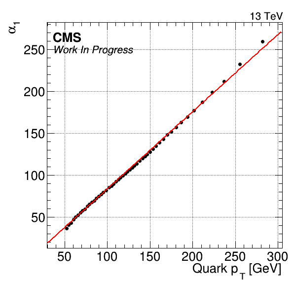
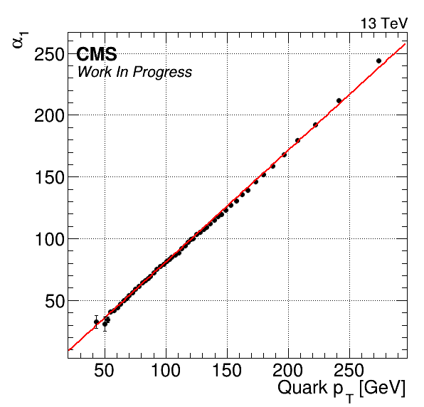
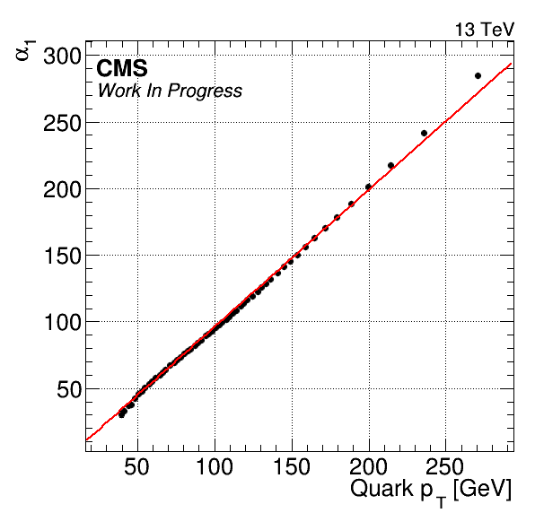
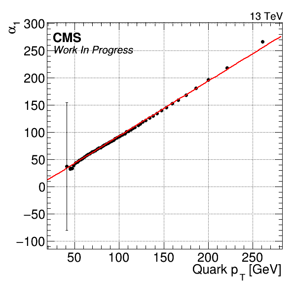

Parameter 3 overview
SBF: [0]*(0.7*exp(-0.5*((x-([1]))/([2]))**2)+(1-0.7)*exp(-0.5*((x-([3]))/([2]+[4]))**2))
ABF: [0]+[1]*x
Run: ttHTobb_M125_TuneCP5_13TeV-powheg-pythia8
Sample: /pnfs/psi.ch/cms/trivcat/store/user/mameinha/gc/transfer/GC2997b3ce756f//ttHTobb_M125_TuneCP5_13TeV-powheg-pythia8.root



